MapNG
MapNGThe Windows app is signed
From this version on, MapNG-Setup.exe and the portable MapNG.exe carry a code signature. Right-click the file, choose Properties, then Digital Signatures: the signer is Nikki Luzader. A file that was changed after it was built no longer has a valid signature.
Each release also comes with checksum files (SHA256SUMS) and a build record that ties every download to the public build that made it. Updates were already signed in 0.3.2; they still are.
The desktop app connects only to a published list
Every address MapNG can connect to is listed on Your data and MapNG, with what each is for. The desktop app now enforces that list: a request to anything else is refused, in the window and in the export, and the app tells you which address it was. Your own Overpass server, if you set one, is allowed.
Help > Network Activity shows every address the app has reached since it started, and how often.
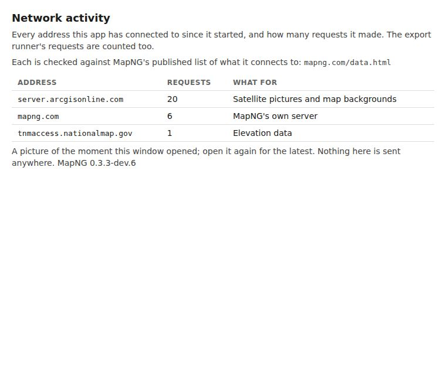
A new security page lists every measure in the app and the site, how to check each one yourself, and what none of them cover. It has its own shield icon at the foot of the control panel.
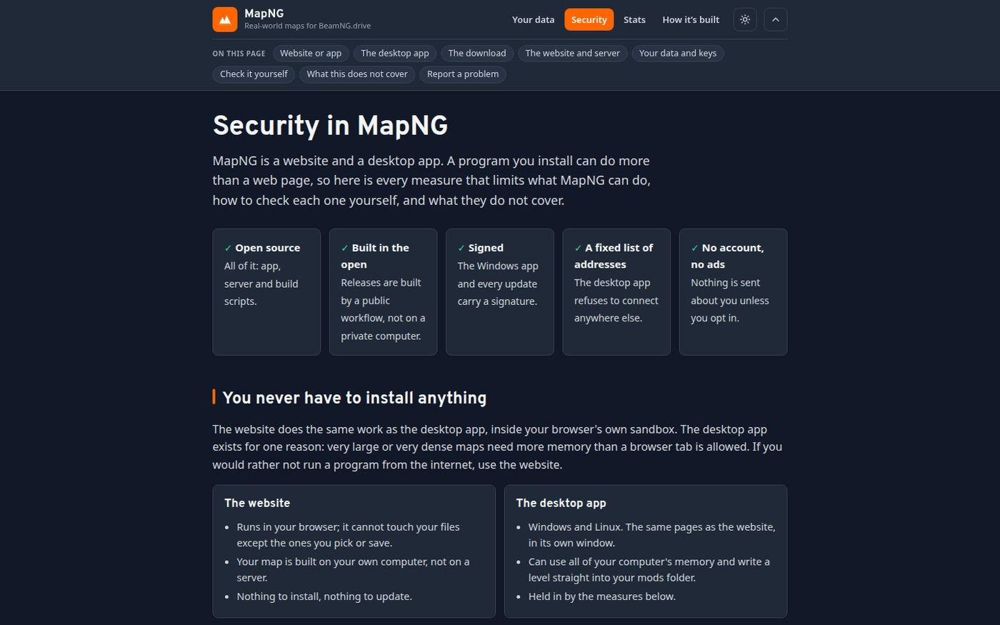
MapNG draws its own street map
The street map behind the selection box is now MapNG's own: OpenStreetMap data, kept in MapNG's storage and drawn in your browser. It replaces both the OpenStreetMap tile layer and the old dark map, so the map no longer leans on OpenStreetMap's public tile servers, which are not meant for an app this busy.
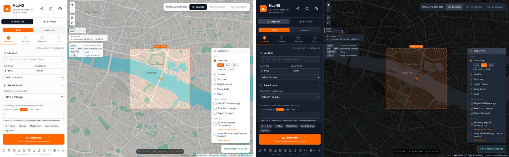
It comes in five styles, as switches under the layer: light, dark, white, greyscale and black. If you had the OpenStreetMap layer or the dark map selected, MapNG moves you to the street map (in its dark style, for the dark map).
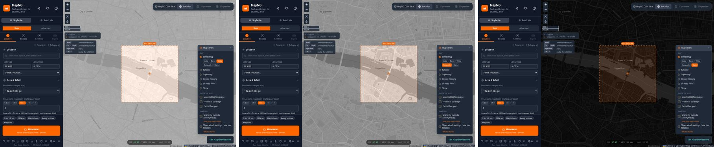
Also: the location search now runs when you press Enter, not while you type, as the search service asks of its users.
The export says when it is done, and where the file went
The progress window now stays open when a level is finished. It shows the file's name and where it was saved: your BeamNG mods folder in the desktop app, the folder you picked in the browser's save window, or the browser's downloads folder. You close it yourself.
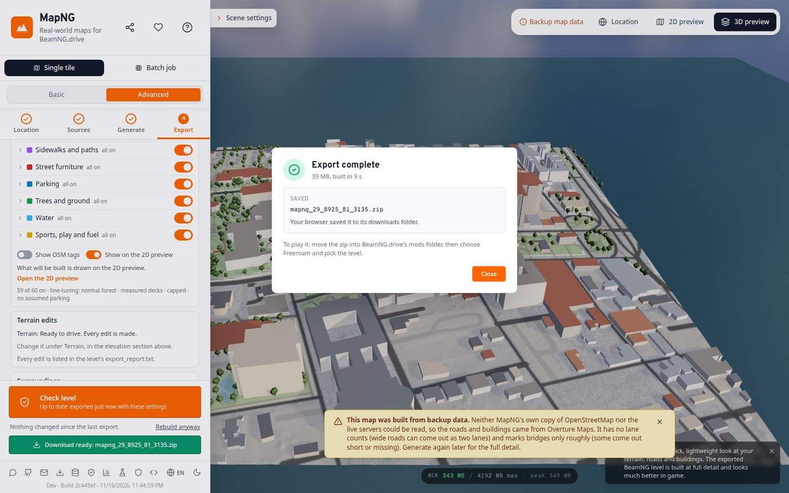
What to build has new groups of its own for bridges, tunnels and railways, each with its own switches.
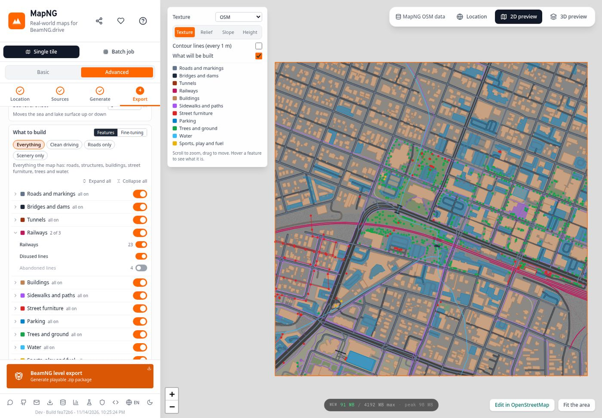
Quay walls at the water's edge
A river wall or a canal quay is vertical. A heightmap can only draw it as a steep bank of ground, so city waterfronts came out as smeared earth sliding into the water. MapNG now finds that bank along every mapped water's edge in built-up ground and stands a stone wall over it: its top level with the ground behind, its face straight down into the water.
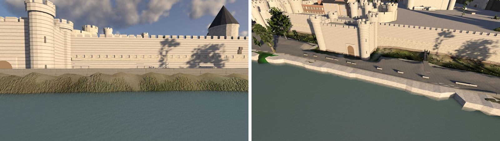
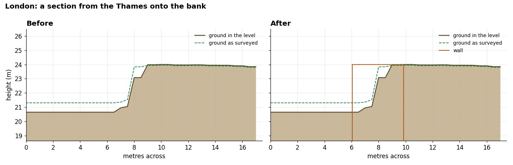
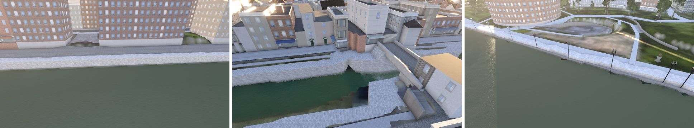
Walls are built on lidar elevation, where the survey shows the bank. Open country keeps its natural banks.
Viaducts where the survey shows nothing under the road
A lidar survey of the bare earth contains every real embankment and leaves every bridge out. So when a big road comes out several metres above that ground, there is no earth under it in reality, whatever the map's tags say. Those stretches are now decks: motorways, trunk and primary roads from 3 m, secondary and tertiary streets from 5 m, and a monorail whenever it is off the ground.
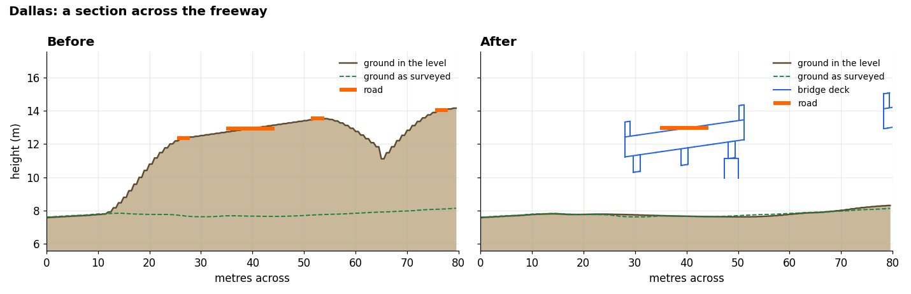
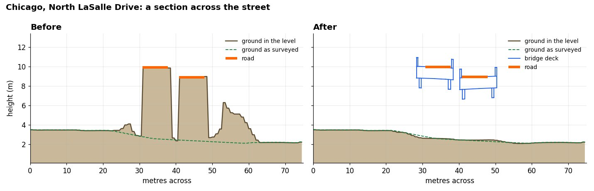
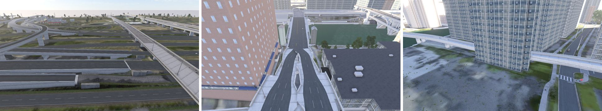
Tunnel ramps that sit in their cutting
Where a road goes down into a tunnel, the cutting was dug at one set of heights and the road laid at another. At a station's road tunnel the two carriageways lay on shelves up to five metres above a trench dug beside them. The cutting's floor now takes the road's height, and its walls stay at the ground they were measured from.
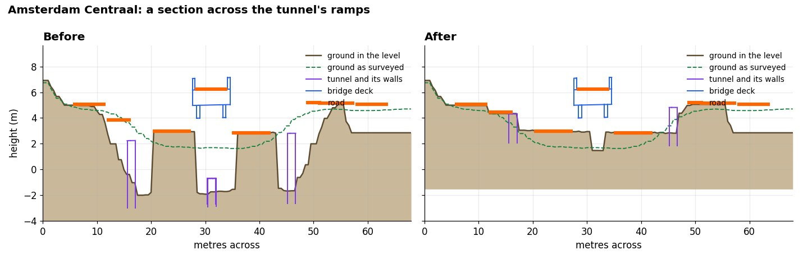
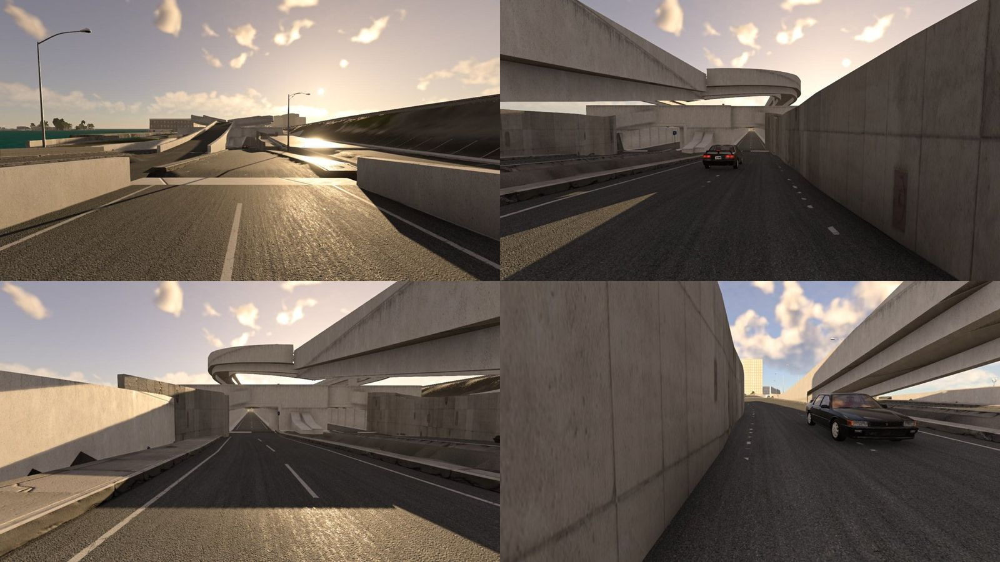
Two more causes of trouble near tunnels are gone. A tunnel is no longer joined to the open road leading to it, which could lose the tunnel and lift every street above it onto decks. And a street over a tunnel's roof stays on its ground.
Dams, rebuilt
A dam's faces now come from its mapped outline and, where the survey holds the dam, from the surveyed shape: one even profile swept along the crest. The crest meets its road with no kerb across it, a path or service road is carried over, and the faces run into the ground instead of being fitted to it. A building on or against a dam, such as a powerhouse or a tower on the crest, takes the dam's own stone or concrete.
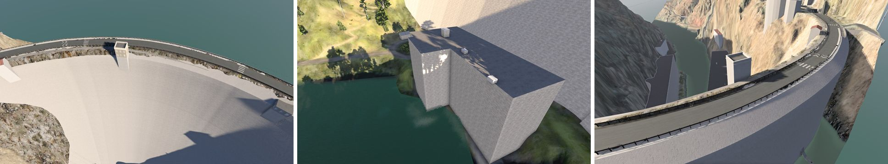
Streets follow the hill
On lidar elevation, every road except a motorway now follows the height the survey measured, unless you switch that off. A steep village street stays steep instead of being cut into the hillside to meet a class's grade. The rule steps back beside bridges and tunnels, where a road crosses another at a different level, and at water.
On 30 m elevation, a small street on a steady hillside now follows it too, up to a 25% grade.
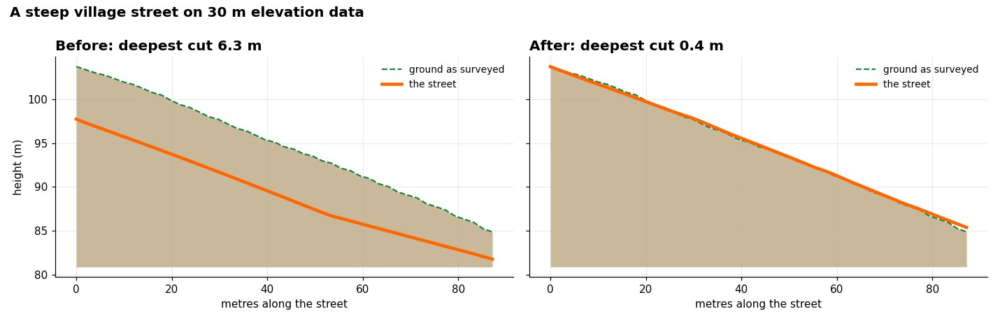
If the elevation source you chose has nothing for your area, MapNG now tries a fallback source and says which one it used.
Dozens more mapped objects
MapNG now places the game's own models for many more things on the map:
- Energy: wind turbines that turn, solar farms, substations, high-voltage lines on lattice towers with their wires, utility poles, pumpjacks, storage tanks.
- Streets: bus shelters, post boxes, recycling bins, picnic tables, flagpoles, information boards, bike stands, billboards, and traffic signs where the map has them.
- Rail: platforms raised beside their track, tram rails blended into the street, and disused or preserved lines as track.
- Land: vineyards, water towers, monuments and memorial stones, kerbed traffic islands.
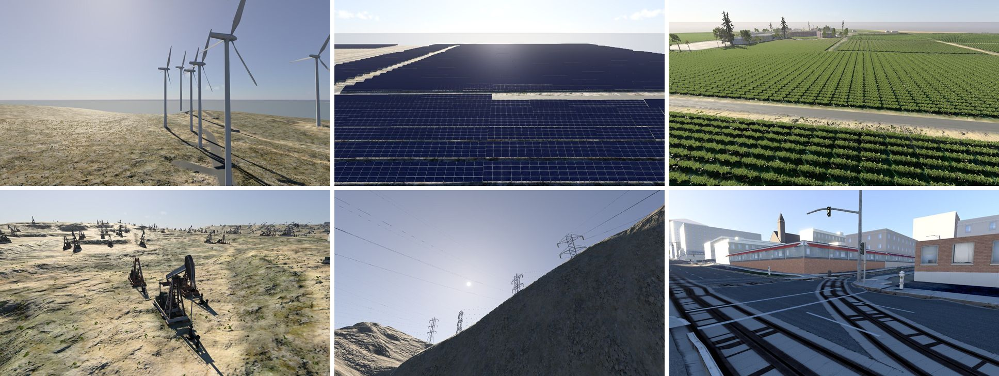
Benches now face the water they stand by, or the path or street beside them. Objects keep clear of walls and footpaths and are never placed twice.
Water and bridges
- Wing walls stand at the ends of bridges, where a road's fill has steep sides.
- A reservoir or tidal river surveyed at two water levels is one flat water surface, with no dry shelf or blocks left in it.
- City blocks beside a big river are no longer dug down to the water.
- Piers and breakwaters that a survey left out are stood up again; no earth columns are left standing in a dug riverbed.
- Bridge towers and piers mapped as buildings are left to the bridge, so a road no longer drives into a house on a suspension bridge.
- Buildings under a raised deck are held below it.
Clearer messages
- If you start MapNG from inside a zip or rar file, it says so and asks you to extract it first.
- If Windows is drawing MapNG without a graphics driver, it tells you once, and why that matters.
- Running out of memory is said in plain words.
- The update window shows its notes correctly.
- A problem report's log never contains a key.
An export that stopped on some dense city maps with the message “Cannot read properties of undefined” is fixed. It came in through a problem report; thank you to whoever sent it.
What is not done yet
- Quay walls are one pale stone everywhere, also where the real ones are brick, and they are only built on lidar elevation.
- Viaducts from the survey also need lidar. On 30 m data a raised road without bridge tags is still an embankment.
- Station squares over road tunnels can still come out a metre or two high on low decks where the tunnel is very shallow.
- Sidewalk slabs between two ramps at different heights can show toothed edges.
- Your old levels are untouched. Export again to get the changes.
Thank you to everyone who sent reports and exports, and to the BeamNG developers whose test areas are now part of MapNG's own checks.